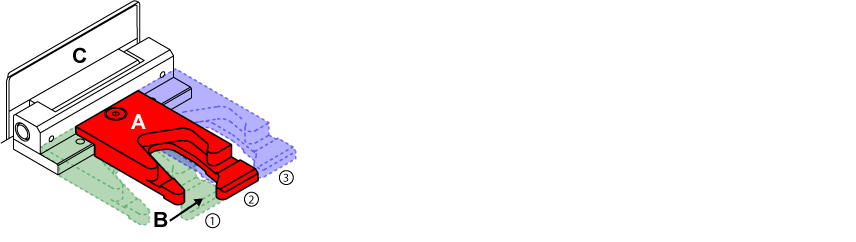
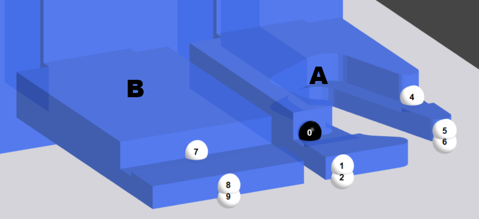
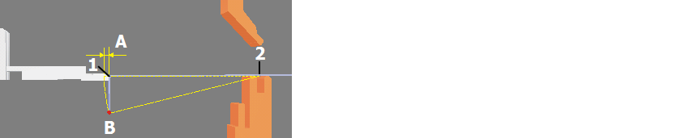

In this dialog box you can change the position of the backgauges or set a new backgauge for the selected bending process. Invalid combinations of backgauge positions are identified by an error symbol .
There are two basic types of backgauge fingers:
- Standard backgauge finger
- Backgauge finger for corner stops
This backgauge finger cannot be used for corner stops. On most machines it is combined with the backgauge finger for corner stops.
Fig.: Sketch showing the standard backgauge finger

Can be used for all backgauges.
Fig.: Diagram of backgauge finger for corner stops

Info: The following explanations apply to the backgauge finger for corner stops, because this is the type most often used. All the information also applies to the standard backgauge finger, except when dealing with a corner stop.
Options
This option is used to position or park the backgauge arm concerned.
If the Parked option is enabled, all other options for the backgauge finger are disabled except the Contact edge The edge on the bending part that is pressed against a stop point on the backgauge finger for precise positioning. option.
NOTE: If this Parked option is enabled and a different contact edge is selected for this backgauge finger, the Parked option is subsequently disabled and the backgauge finger is set at the selected contact edge.
With this option, the backgauge finger is snapped onto the relevant corner of the contact edge. At least 4 stop points (A) are needed to fix the part precisely.

Fig.: Stop points when snapping onto corners
NOTE: This option is only possible if a backgauge finger for corner stops is fitted.
Choose this option for rounded edges or corner stops.
If it is not possible to provide a corner stop because of the current position of the backgauge finger, it may still be possible to provide a stop by changing the backgauge fingers on the backgauge arms.
Press the Assign button to define the contact edge against which the backgauge shall rest. All possible contact edges are indicated by a black line.
Info: Pressing the Assign button zooms to the contact edge highlighted in red (A).
Fig.: Assigning contact edges

Assigning backgauges to an edge
- Press the Assign button.
- Tap the contact edge to which you wish to assign the backgauges.
- In the Apply dialog, define the positions for which to apply the backgauge.
Tip: If it is not possible top set a backgauge with the stop point on the backgauge finger, use the Reference point option to select a different point on the backgauge finger.
This option defines which element of the backgauge fingers will rest against the contact edge of the bending part. By default, one straight backgauge finger and one backgauge finger for corner stops are fitted on each backgauge arm.
You can select the reference point in the Parameters dialog or by pressing the Change button.
- Change
Select the reference number on the backgauge finger to select the reference point. The program zooms in on the backgauge finger with the numbers of the reference points.
Corner stop (A)
| 0/4 | The bending part lies on the backgauge finger and can be positioned against the backgauge. The stop point can also be used for a corner stop. |
| 1/2 | These back gauge edges serve only as a stop for the bending part. If stop point (2) is selected, then the backgauge finger can be positioned over the bottom tool for short bend sides. |
| 3 | The bending part lies on the backgauge finger and is positioned against the bolt. |
| 5/6 | These back gauge edges serve only as a stop for the bending part. If stop point (6) is selected, then the backgauge finger can be positioned over the bottom tool for short bend sides. |
Straight backgauge (B)
| 7 | The bending part lies on the backgauge finger and can be positioned against the backgauge. |
| 8/9 | These back gauge edges serve only as a stop for the bending part. If stop point (9) is selected, then the backgauge finger can be positioned over the bottom tool for short bend sides. |
Fig.: Reference planes on the backgauge finger

This option is used to switch the sensor on the backgauge finger on or off. This option is only enabled if there is a sensor on the backgauge finger.
The sensor detects whether the sheet is positioned correctly against the backgauge finger. If the sheet is not positioned correctly against the backgauge finger while the sensor is switched on, it is not possible to perform the next bending process.
This option specifies the distance by which the backgauge finger is retracted from the contact edge before the bend is made. Retractions are used in order to prevent collisions between bending part and backgauge finger during the bending process.
Retractions must be set if an already bent part, whose bent side is pointing down (B), shall be pushed against the backgauge finger (1).
Fig.: Using a retraction (A) for a backgauge when the part has a side bent downwards

Key:
| A | Minimum distance for backgauge-finger retraction |
| B | Distance to end point of bent side |
| 1 | Contact edge |
| 2 | Pivot point of the side (B) during bending |
NOTE: The minimum retraction value when backgauges are assigned automatically is 10 mm.
This option defines the position of the backgauge finger against the contact edge of the bending part. There are two ways of positioning the backgauge finger:
- By entering the position in the Z position field.
- By moving the slide control.
Buttons
- Clear conflicts
- Warnings
- Error
You can clear warnings and errors for the process, bend, station or part.
This function acknowledges and clears the warning for the selected bending process. The warning is displayed as a symbol after the tool name.
Tip: Use this function for warnings that can be ignored for the selected bending process. Acknowledging the warning tells the system that the tool can be used for the bending process.
This function clears errors from allocated tools.
Info: This function is only enabled if the pending error can be cleared.